Learning outcomes
By the end of Chapter 6 you should be able to do each of these. The tag shows where it is covered.
- 6.1Describe the temperature and pressure conditions of the metamorphic environment.
- 6.1Identify and describe the three principal metamorphic agents.
- 6.1.2Describe what recrystallization is and how it affects mineral crystals.
- 6.2.1Explain what foliation is and how it results from directed pressure and recrystallization.
- 6.3Explain the relationships among slate, phyllite, schist, and gneiss in terms of metamorphic grade.
- 6.3Define index mineral.
- 6.4Explain how metamorphic facies relate to plate tectonic processes.
- 6.4.2Describe what a contact aureole is and how contact metamorphism affects surrounding rock.
- 6.1.3Describe the role of hydrothermal metamorphism in forming mineral deposits and ore bodies.
How to use this guide
Underlined words are key terms. Click one, or open Key terms at the bottom right, to read and search every definition from this chapter. (meta-, change; -morphos, form) is the third rock family of the rock cycle (Unit 1). Igneous and sedimentary rocks can both become metamorphic, and metamorphic rocks can be metamorphosed again. Because metamorphism is driven by plate motion, these rocks are a history book of past tectonics.

6.1Metamorphic processes
happens when solid rock changes in composition, texture, or both without its crystals melting (melting would make igneous rock). The rock that is changed is the or parent rock (proto-, first; lithos, rock). Most metamorphism happens deep inside the crust. Three agents do the work (Table 6.1).
| Agent | Changes chemistry (new minerals) | Changes texture |
|---|---|---|
| Temperature (heat) | Yes | Yes |
| Confining pressure | Yes | Yes |
| Directed stress | No (mechanical only) | Yes |
| Chemically reactive fluids | Yes, and can add or remove elements | Through new minerals |
6.1.1 Temperature (heat)
Temperature measures a substance's energy. Rising temperature upsets the chemical equilibrium (cation balance) of minerals. Atoms can vibrate so hard that they jump from one position to another inside the crystal lattice while the lattice stays intact, so this swapping happens in solid rock.
Metamorphic temperatures lie between surface (sedimentary) conditions and magma (Figure 6.2). Heat-driven metamorphism starts at about 200 °C and can continue to 700–1,100 °C; hotter rock melts into magma, which is no longer metamorphism. Temperature rises with depth along the (Unit 4), and metamorphic rocks record these depth-related changes.
6.1.2 Pressure
is force per unit area. Like heat, it can upset the chemical equilibrium of minerals. In geology, is the force acting on a rock, and is the result, including metamorphic changes in its minerals. Pressure on metamorphic rock comes in two kinds (Figure 6.3).
Confining pressure
Rocks press on one another simply because they are stacked. Pressure from the rock above is balanced from below and the sides, so it is equal in all directions: , also called lithostatic pressure. It increases with depth and, like heat, drives chemical reactions that form new minerals. It is measured in : about 1 bar at sea level and about 10,000 bars at the base of the crust. The chapter gives metamorphic pressures starting at about 3,000 bars, around 15–35 km below the surface (see Fact-check notes).
Directed stress
, also called differential or tectonic stress, is an unequal balance of forces, stronger in one or more directions. It comes from moving lithospheric plates. Unlike confining pressure, the chapter says it does not drive chemical reactions; it changes the protolith mechanically, altering the arrangement, size, and shape of crystals. Directed stress produces textures in several ways:
- crystals rotate and change their orientation;
- crystals fracture, which reduces grain size;
- crystals grow larger as atoms migrate;
- crystal shapes become deformed.
These mechanical changes happen through : minerals dissolve where the rock is under high stress and precipitate (regrow) where stress is lower. Recrystallization can enlarge grains, much as neighbouring soap bubbles merge into bigger ones, and it lets rock deform like putty without breaking. These changes are clues to how deep faults formed and moved. A classic sign of directed stress is pebbles that were once round, stretched into flattened ovals.
The result is a distinctive texture. Compare the random, interlocking grains of igneous granite with the aligned bands of metamorphic gneiss formed under high temperature and pressure (Figure 6.4, Figure 6.5).

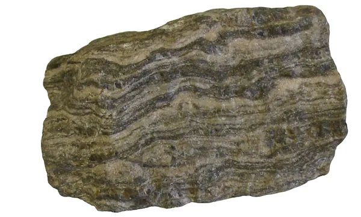
6.1.3 Fluids
The third agent is chemically reactive fluids, expelled by crystallizing magma or released by metamorphic reactions. They are mostly water (H2O) and carbon dioxide (CO2), with smaller amounts of potassium, sodium, iron, magnesium, calcium, and aluminum. The fluids react with the protolith and change its mineral makeup; new minerals can use elements from the rock and from the fluid. Metamorphism in which fluids play the main role is or hydrothermal alteration. Water takes part in the reactions and makes the components much more mobile.
Ore deposits. Fluid-driven metamorphism often makes valuable mineral deposits next to igneous intrusions. In the Cottonwood Canyons and Mineral Basin of northern Utah, hot fluids from a crystallizing granitic intrusion, the Little Cottonwood Stock, reacted with and dissolved the surrounding (mostly limestone and dolostone) and precipitated new minerals: argentite (silver sulfide), galena (lead sulfide), chalcopyrite (copper iron sulfide), and native gold.
On the sea floor. At mid-ocean spreading centers, new oceanic crust reacts with seawater. Hydrothermal alteration of ultramafic mantle rock rich in olivine produces , made of serpentine-group minerals. Alteration can also remove elements: seawater circulates down through cracks in hot, fresh basalt and dissolves ions that do not fit snugly in silicate crystals, such as copper. The mineral-laden water comes out at hydrothermal vents called , named for the dark precipitates that form when hot vent water meets cold seawater (Unit 4). Ancient black-smoker deposits supplied copper ore to the people of Cyprus from as early as about 4,000 BCE, and later to the Romans.
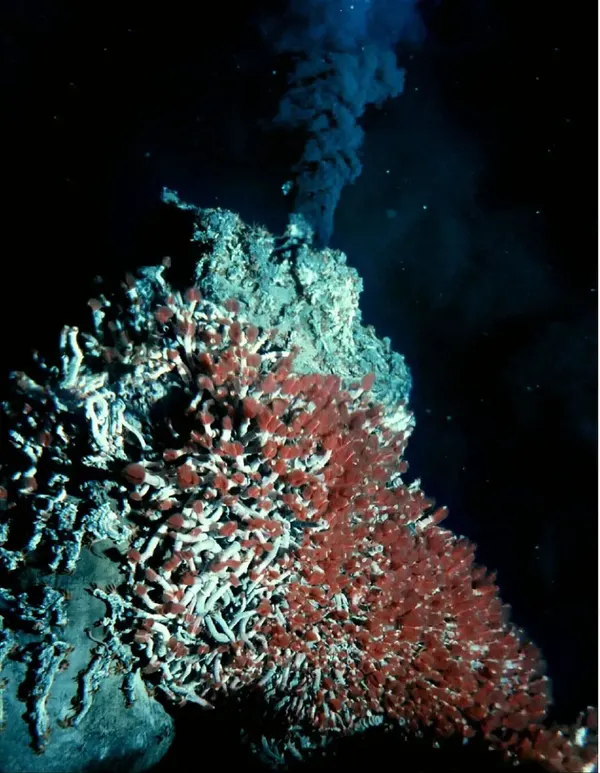
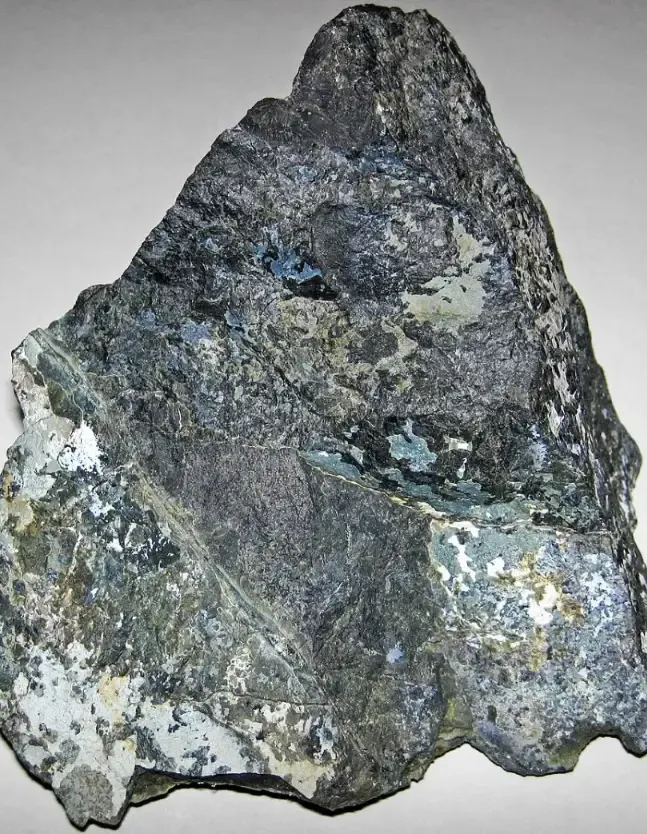
Check yourself: Section 6.1 quiz in the textbook ↗
6.2Metamorphic textures
describes the shape and orientation of mineral grains. Metamorphic rocks are foliated, non-foliated, or lineated. Table 6.2 at the end of this section summarizes how to identify them.
6.2.1 Foliation and lineation
means minerals lined up in planes, stacked like the pages of a book (folia, leaf). Platy minerals such as the micas are thin and flat by nature. Other minerals, such as hornblende, are long in one direction, like a pencil or needle; when they line up, the result is a . Linear crystals (hornblende, tourmaline, stretched quartz) can form either fabric, or both (Figure 6.8):
- Foliation only: grains lie in planes with mica but point in no common direction.
- Lineation only: grains point in a common direction but form no planes, like a bundle of straws.
- Foliation and lineation: grains lie in planes and point the same way.
Foliated rocks are named by the style of their foliation. In order of increasing grain size:
is fine-grained, with a foliation called : tiny platy crystals of mica and chlorite grow flat, perpendicular to the direction of stress. Its minerals are too small to see. Slate's thin layers can look like sedimentary bedding, but they come from directed stress and may cut across the original strata at any angle, partly or completely hiding the bedding (Figure 6.9). Thin slabs of slate are used for roofs and tiles.
has larger platy grains, so its foliation surface shows a sheen of reflected light, often with a wavy wrinkling called . has even larger platy grains, visible as individual crystals; muscovite, biotite, and garnet are common. Its foliation, made by the parallel alignment of visible platy grains, is called . Schists often contain , large crystals (such as garnet) surrounded by small grains, and are named for their minerals: mica schist, garnet schist (mica schist with garnets), staurolite schist.
is foliation in which visible silicate minerals separate into light and dark bands or lineations. The grains are coarse and often folded; the rock is . Gneisses form at the highest temperatures and pressures, so some melting may begin. Partly melted gneiss, a transition between metamorphic and igneous rock, is : banded light and dark rock, often swirled, with thin light-colored layers parallel to or cutting across the foliation. The light layers are a felsic melt that separated from the darker, highly metamorphosed layers, or was injected from elsewhere.
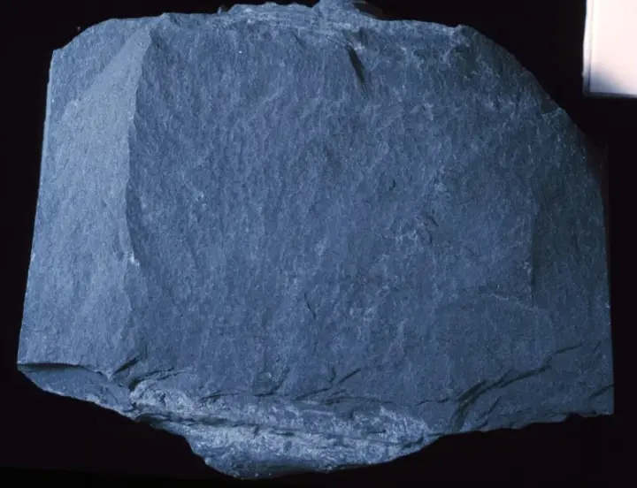
Slategrains too small to see Slaty cleavageold slate quarry, Germany
Slaty cleavageold slate quarry, Germany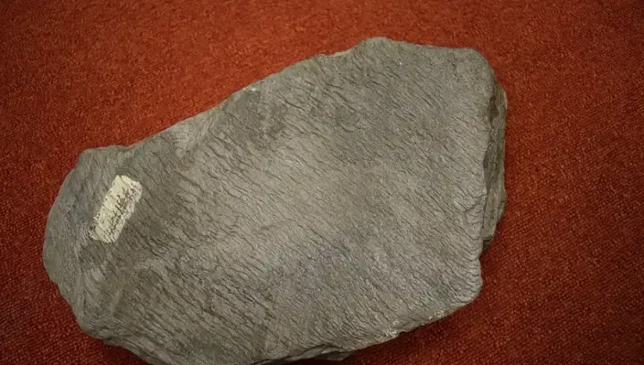
Phyllitesheen and crenulations Schistvisible mica crystals
Schistvisible mica crystals- Gneisslight and dark bands
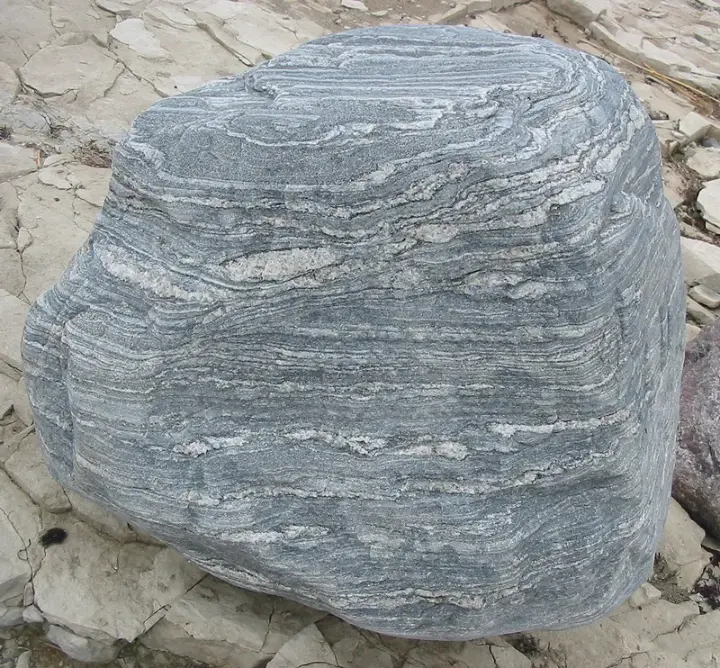
Migmatitepartly melted, swirled bands
6.2.2 Non-foliated
textures have no foliation, lineation, or other alignment of grains. These rocks are usually made of just one mineral, so recrystallization makes the crystals grow together with no preferred direction.
- forms from sandstone. Recrystallization enlarges and interlocks the quartz grains (Figure 6.11). Hit with a hammer, quartzite breaks across the grains; sandstone, held only by thin cement, breaks around them. Quartz is mechanically and chemically durable, so quartzite is very hard and resists weathering.
- is metamorphosed limestone or dolostone, made of calcite or dolomite. Recrystallization usually makes larger interlocking crystals. Marble can look like quartzite, but it is much softer, and calcite marble fizzes in dilute hydrochloric acid.
- is dense, fine-grained, hard, and blocky or splintery, made of several silicate minerals. Its crystals get smaller during metamorphism, so small that specialized study is needed to identify them. It is common around igneous intrusions, and its protolith, anything from mudstone to basalt, can be hard to tell.
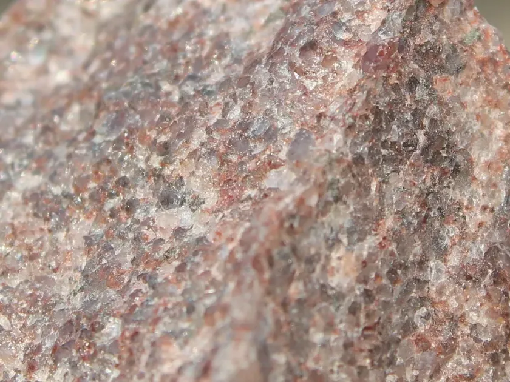
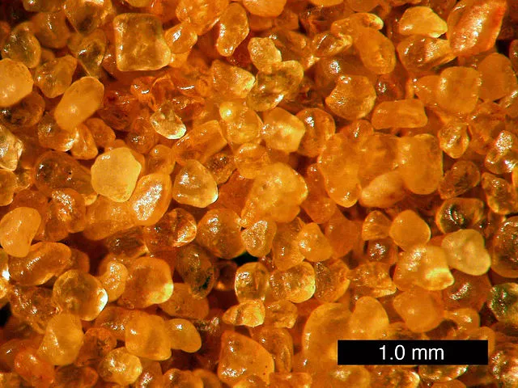
 QuartziteBaraboo Quartzite, Wisconsin
QuartziteBaraboo Quartzite, Wisconsin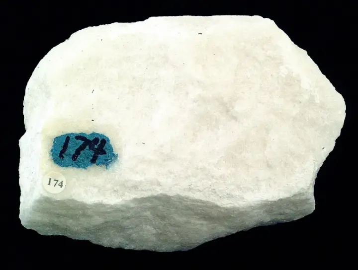
Marblewhite calcite marble Hornfelsdense, fine-grained (spotted)
Hornfelsdense, fine-grained (spotted)
| Foliation | Grain size | Rock | Textural features | Mineral composition | Parent rock |
|---|---|---|---|---|---|
| Foliated | Fine-grained or no visible grains | Slate | Well-developed slaty cleavage; dense, microscopic grains with a slight sheen or dull luster; clanky sound when struck; breaks into hard, flat sheets | Fine, microscopic clay or mica | Shale |
| Phyllite | Finely crystalline; micas hard to see but give a sheen; breaks along wavy surfaces | Dark silicates and micas | Siltstone or shale | ||
| Medium- to coarse-grained | Mica schist | Schistose texture: foliation from aligned visible crystals; breaks along scaly foliation surfaces; medium- to fine-grained; sparkly | Chlorite, biotite, muscovite, garnet, hornblende; a recognizable mineral is used in the name; porphyroblasts common | Siltstone or shale | |
| Garnet schist | |||||
| Gneiss | Gneissic banding: coarse grains in alternating light and dark layers, banded in side view; crystalline; no cleavage | Light quartz and feldspar; dark ferromagnesian minerals | Shale or granitic rock | ||
| Migmatite* | Swirled gneiss with thin light-colored layers | Light felsic melt layers between darker, highly metamorphosed layers | Gneiss that partly melted | ||
| Non-foliated | Fine-grained or no visible grains | Amphibolite | Medium- to coarse-grained crystalline texture | Amphibole (hornblende) in blade-like crystals | Basalt, gabbro, or ultramafic igneous rock |
| Anthracite coal | Microcrystalline; glassy black sheen; conchoidal fracture; low density | Fine, tar-like organic material | Coal | ||
| Hornfels | Dense and dark; fine or microcrystalline; very hard; gray, gray-green to black | Microscopic dark silicates | Many rock types | ||
| Serpentinite | Microcrystalline or no visible grains; smooth, wavy surfaces; dull or glossy; usually green | Serpentine; fibrous asbestos may be visible | Ultramafic igneous rock or peridotite | ||
| Fine- to coarse-grained | Soapstone or talc schist | Microcrystalline or no visible grains; scratched by a fingernail; green, gray, brown or white; soapy feel | Talc | Ultramafic igneous rock | |
| Quartzite | Crystalline; hard (scratches glass); breaks across grains; sandy or sugary; white, pink, buff, brown, red or purple | Quartz grains fused together; grains do not rub off as in sandstone | Quartz sandstone | ||
| Marble | Finely crystalline (like a sugar cube) to medium or coarse; white, pink, gray and other colors; fossils in some | Calcite or dolomite tightly fused; calcite fizzes in HCl, dolomite only when powdered | Limestone or dolostone | ||
| Metaconglomerate | Like conglomerate, but breaks across clasts as easily as around them; pebbles may be stretched (lineated) or cut by cleavage | Pebbles, commonly granite, jasper, chert, quartz or quartzite | Conglomerate |
Check yourself: Section 6.2 quiz in the textbook ↗
6.3Metamorphic grade
is how much metamorphic change a rock has undergone, from low grade (little change) to high grade (a lot). Low-grade metamorphism begins at temperatures and pressures just above sedimentary conditions. The sequence slate → phyllite → schist → gneiss shows increasing grade, with grains growing coarser at each step (Figure 6.14).
Geologists read grade from , which form only at certain temperatures and pressures. They also hint at the protolith and the conditions that made the rock. Chlorite, muscovite, biotite, garnet, and staurolite are index minerals in order from low to high grade. Some rocks are named for their highest-grade index mineral: chlorite schist (low grade), muscovite schist (slightly higher), and garnet schist, which has seen much higher pressure and temperature than chlorite schist.
 Garnet schistgarnet porphyroblasts, Syros, Greece
Garnet schistgarnet porphyroblasts, Syros, Greece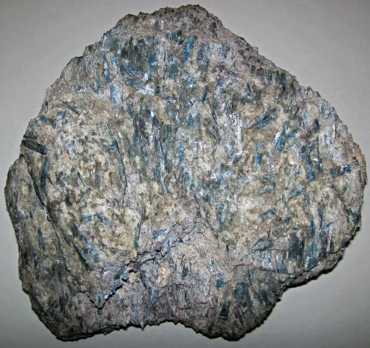
Kyanite schistblue blades of kyanite
Three index minerals, kyanite, andalusite, and sillimanite, share one chemical formula, Al2SiO5, but have different crystal structures. Minerals like this are (Unit 3). Which one forms depends on pressure and temperature, as a shows (Figure 6.16): kyanite at high pressure, andalusite at low pressure, sillimanite at high temperature.
Check yourself: Section 6.3 quiz and phase-diagram activity in the textbook ↗
6.4Metamorphic environments
Like igneous rocks, metamorphic rocks form at different zones of pressure (depth) and temperature, plotted on a pressure–temperature (P–T) diagram. is an objective description of a rock; in metamorphic rocks, a is a set of minerals, a , that is stable in one range of pressure and temperature (Figure 6.17). Facies names come from those minerals, and recognizing a rock's facies is the most direct way to read its metamorphic history.
The Barrovian sequence
In the late 1800s, British geologist George Barrow mapped zones of index minerals in an area of regional metamorphism in Scotland (Figure 6.18). His of increasing grade is: chlorite (slates and phyllites) → biotite (phyllites and schists) → garnet (schists) → staurolite (schists) → kyanite (schists) → sillimanite (schists and gneisses).
The first, chlorite-bearing assemblage is typical of the , which forms at relatively low pressure and temperature on the fringes of regional metamorphism. "Green" comes from green minerals such as chlorite, serpentine, and epidote; "schist" from platy minerals such as muscovite.
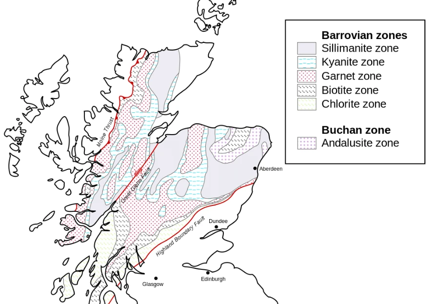
Different settings make different facies (Figure 6.19, Table 6.3). Each is described below.
| Kind | Setting | Conditions | Typical rocks or facies |
|---|---|---|---|
| Burial | Deep sedimentary basins, > 2 km | Low T, rising P | Zeolite facies; quartzite |
| Contact | Around intrusions or under lava | High T, low P | Hornfels, quartzite, marble |
| Regional | Mountain ranges at converging plates | Rising T and P over large areas | Slate → gneiss; Barrovian zones |
| Subduction zone | Sinking oceanic slab | High P, low T | Blueschist, greenstone |
| Fault | Fault zones | Shearing; brittle near the surface, ductile deeper | Rock flour, cataclasite, mylonite |
| Shock | Meteorite (bolide) impacts | Very high P delivered rapidly | Shocked quartz, shatter cones, tektites |
| Hydrothermal | Near intrusions; mid-ocean ridges | Hot reactive fluids | Ore deposits, serpentinite (6.1.3) |
6.4.1 Burial metamorphism
happens when rocks are buried deeper than about 2,000 m (1.24 miles), commonly in sedimentary basins under thick piles of sediment. It continues , the process at work during lithification (Unit 5). It can turn the clay mineral smectite in shale into another clay, illite, or turn quartz sandstone into quartzite. Utah's Big Cottonwood Formation was deposited as near-shore sand in the late Proterozoic, buried deeply and metamorphosed to quartzite, folded, and later exposed in the Wasatch Range. Rising temperature and confining pressure with depth give low-grade rocks with mineral assemblages of the .
6.4.2 Contact metamorphism
happens in rock exposed to high temperature and low pressure, as when hot magma intrudes a protolith or lava flows over it. The lowest pressures give the ; higher pressures can give greenschist, amphibolite, or granulite facies. As always, the protolith's texture and chemistry control the result: fine-grained shale and basalt, which are chemically similar, recrystallize into hornfels; sandstone (silica) becomes quartzite; limestone (carbonate) becomes marble (Figure 6.20).
When contact metamorphism happens deeper in the Earth, it forms rings of different facies around the intrusion, called a . Around the Alta Stock in Little Cottonwood Canyon, Utah, rings of the index minerals forsterite (an olivine) and tremolite (an amphibole) surround the intrusion, with a ring of talc farther out in the dolostone (Figure 6.22).

6.4.3 Regional metamorphism
happens when rock is heated and squeezed over a large area, often in mountain ranges built where continental plates converge. This is the setting of the Barrovian sequence: the lowest grade is on the flanks of the mountains and the highest near their core, closest to the plate boundary.
An old example is the northern Appalachians. Driving east from New York through Vermont into New Hampshire, the rocks change from sedimentary rock to slate, phyllite, schist, gneiss, migmatite, and finally the granite of the igneous core (Figure 6.23); New Hampshire is nicknamed the Granite State. Going on east from eastern New Hampshire to the coast, the sequence reverses.
6.4.4 Subduction zone metamorphism
is a type of regional metamorphism where a slab of oceanic crust is subducted under continental crust (Unit 2). Rock is a good insulator, so the sinking slab heats up slowly while the pressure on it rises quickly: high pressure, low temperature. , a distinctly blue mineral, is the index mineral of the . California's Coast Range near San Francisco has blueschist-facies rocks from subduction, including blueschist, greenstone, and red chert. is metamorphosed basalt that gets its green color from the index mineral chlorite.
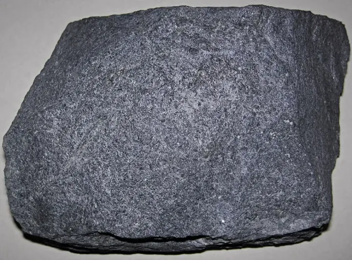
BlueschistSanta Catalina Island, California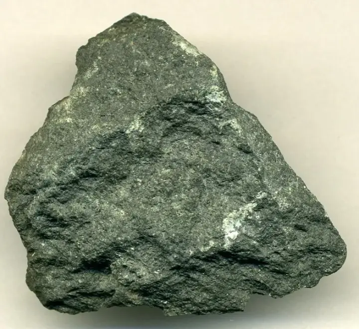
Greenstonemetamorphosed pillow basalt, Michigan
6.4.5 Fault metamorphism
Many metamorphic rocks form along faults, and which one depends on depth (Figure 6.25):
- Near the surface, repeated brittle faulting grinds rock to the size of baking flour: .
- Deeper, faulting makes , a chaotically crushed mix of rock with little internal texture.
- Below that, where strain becomes ductile, forms by under directed shear, which usually reduces grain size.
- When larger, stronger crystals (feldspar, quartz, garnet) in the mylonite matrix are sheared into asymmetric eye shapes, they are called (German for "eyes").
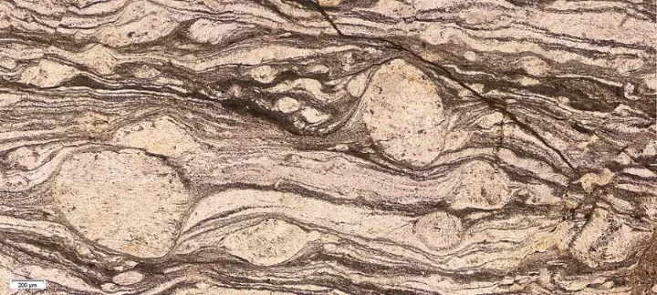
Mylonitefine streaks wrap around larger grains Augen gneissfeldspar "eyes", Idaho
Augen gneissfeldspar "eyes", Idaho
6.4.6 Shock metamorphism
(impact metamorphism) results from meteor or other impacts, or a similar high-pressure shock. Very high pressure, with high but less extreme temperature, is delivered very quickly. It produces:
- (shock lamellae): narrow planes of glassy material with distinct orientations in silicate grains. Quartz with them is .
- : cone-shaped pieces of rock made by branching fractures during an impact, from microscopic to several meters across. Not strictly metamorphic, but common around shock metamorphism; in fine-grained rock they show a "horsetail" pattern.
- Index minerals, usually found only with a microscope: the quartz polymorphs and , which need very high pressure and moderate to high temperature (700–1,200 °C).
- Glass. are gravel-size glass grains thrown out by an impact. They look like volcanic glass but contain no water or phenocrysts, have different bulk and isotopic chemistry, and hold partly melted bits of shocked minerals.
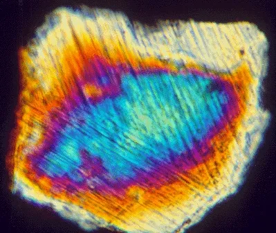
Shocked quartzplanar deformation features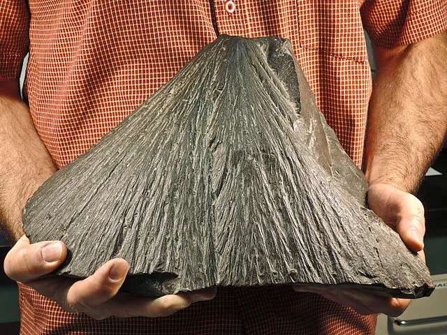
Shatter coneCharlevoix impact, Quebec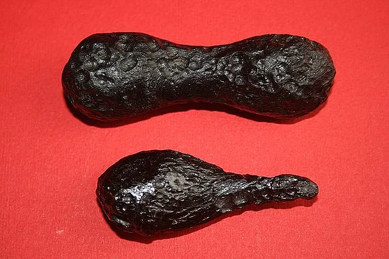
Tektitesimpact glass
Other natural glasses form without volcanoes. Tektites differ chemically from , made by nuclear explosions, and , made by lightning. ("false tachylite") is glass made by intense shear heating, as on faults; it looks like the volcanic glass tachylite but is not volcanic. The chapter applies the term to all non-volcanic geologic glasses, but its standard meaning is friction melt from faulting or impacts (see Fact-check notes).
Check yourself: Section 6.4 quiz in the textbook ↗
Summary
Metamorphism changes existing rocks (protoliths) into new rocks with new minerals and new textures. Rising temperature and pressure are the main causes, and fluids add important mobility of materials. Metamorphic rocks are identified mainly by texture: foliated textures come from platy minerals forming planes, while non-foliated rocks have no internal fabric. Grade describes how much metamorphism a rock has undergone, and facies, sets of minerals, guide an interpretation of its history. Collisions, subduction, faulting, and even impacts from space all cause metamorphism.
Quick recap
- Metamorphism: solid-state change from about 200 °C up to melting (700–1,100 °C).
- Agents: heat, confining pressure (equal, makes new minerals), directed stress (unequal, aligns and reshapes grains), fluids (hydrothermal; ores, serpentinite, black smokers).
- Recrystallization: dissolve where stressed, regrow where stress is lower.
- Foliated: slate → phyllite → schist → gneiss → migmatite (grade and grain size increase). Non-foliated: quartzite, marble, hornfels.
- Index minerals: chlorite → biotite → garnet → staurolite → kyanite → sillimanite (Barrovian). Kyanite, andalusite, sillimanite are Al2SiO5 polymorphs.
- Facies: zeolite, hornfels, greenschist, amphibolite, granulite, blueschist, eclogite.
- Settings: burial, contact (aureole), regional, subduction (blueschist), fault (rock flour, cataclasite, mylonite), shock (shocked quartz, shatter cones, tektites).
Check yourself: Chapter 6 review quiz in the textbook ↗
Resources
Fact-check notes
Every statement in this guide was checked against the textbook chapter. Where the chapter differs from current references or contradicts itself, the guide uses the corrected value and lists the difference here, so you know what the textbook says.
| Topic | Chapter says | Note |
|---|---|---|
| Metamorphic pressures | "3,000 bars around 50,000 bars, which occurs around 15–35 kilometers below the surface" | At about 3.5 km per kilobar, 15–35 km is roughly 4,000–10,000 bars, matching the chapter's own "10,000 bars at the base of the crust". 50,000 bars (5 GPa) is reached only near 150 km depth, in deeply subducted rock. The guide gives the start value and depth range only. |
| Serpentinite protolith | "Mafic mantle rock, such as olivine and basalt" | Serpentinite forms from ultramafic rock rich in olivine (peridotite); olivine is a mineral, and basalt (mafic) alters to greenstone instead. The guide says "ultramafic mantle rock rich in olivine". |
| Alta Stock zones | A granite "surrounded first by rings of … tremolite and … forsterite, with a ring of talc further away" | Moore & Kerrick (1976) map the zones, from the contact outward, as (periclase,) forsterite, tremolite, talc; the stock is granodiorite. Figure 6.22 uses that order. |
| Coesite and stishovite | "Intense pressure (> 10 GPa)" is required | Stishovite needs roughly 8–10 GPa or more, but coesite forms from about 2–3 GPa. The guide says "very high pressure". |
| Pseudotachylyte | "All geologic glasses not derived from volcanoes" | In standard usage, pseudotachylyte is glassy rock made by frictional melting during fast fault slip (or in impact structures), not every non-volcanic glass; tektites, fulgurites, and trinitite have their own names. |
| Directed stress | "Occurs at much lower pressures" than confining pressure | Directed stress adds to confining pressure rather than replacing it; differential stresses in rock are much smaller than the confining pressure at depth. The guide does not repeat the comparison. |
| Index-mineral list in 6.3 | "Chlorite, muscovite, biotite, garnet, and staurolite" | Barrow's sequence in 6.4 starts chlorite → biotite and adds kyanite and sillimanite; muscovite is common through the low and middle grades rather than a separate zone. Both lists are given as the chapter states them. |
| Zeolite facies on the P–T graph | Graph axes start at 300 °C and 2 kbar | The zeolite field on the graph lies at about 300–355 °C and 2–5 kbar, and Figure 6.17 keeps that. Because the graph starts at 300 °C, the cooler part of the zeolite facies (burial metamorphism from about 200 °C, 6.1.1) is off the chart. |
| Typos | "Hydrothermal alternation"; "metamorphized"; "cataclasites"/"cataclastites"; "augens" | Alteration; metamorphosed; cataclasites; augen (already plural in German). |
Diagrams were checked against the chapter and standard references: slaty cleavage parallel to fold axial planes and perpendicular to the shortening direction; the Al2SiO5 triple point near 500 °C and 3.8 kbar (Holdaway, 1971; other calibrations put it near 550 °C and 4.5 kbar); facies fields redrawn from the chapter's P–T graph, with schematic paths; contact-aureole mineral order after Moore & Kerrick (1976); brittle–ductile transition at roughly 10–15 km in continental crust (Sibson, 1977; Scholz, 1988). The chapter's rock-cycle, pressure-versus-stress, granite-versus-gneiss, fabric, foliation-versus-bedding, P–T, and most rock photos are marked "All Rights Reserved" and are not reproduced; this guide redraws the diagrams and uses openly licensed photos from Wikimedia Commons instead.
Credits
Content summarized from An Introduction to Geology, Chapter 6 (contributing author Dr. Peter Davis), © 2017 Chris Johnson, Matthew D. Affolter, Paul Inkenbrandt, and Cam Mosher, licensed CC BY-NC-SA 4.0. Images are credited in each caption; images the chapter marks "All Rights Reserved" are not used.
- From the chapter, under the licenses in its media attributions: black smoker, slate quarry, schist, gneiss, quartzite close-up, sand, garnet schist, Barrovian zones map, Henry Mountains outcrop, shocked quartz, shatter cone, tektites.
- Outside sources, from Wikimedia Commons: hero photo (NPS, public domain), granite (USGS, public domain, also used in Unit 4), slate, phyllite, migmatite, Baraboo Quartzite, marble, hornfels, kyanite schist, serpentinite, blueschist, greenstone, mylonite, augen gneiss; licenses as in each caption.
- Temperature window, pressure and stress, fabrics, foliation versus bedding, grade chart, Al2SiO5 phase diagram, facies diagram, tectonic settings, contact aureole, Alta Stock zones, Appalachian traverse, and fault rocks: drawn for this guide.
- Outside references for checking: Holdaway (1971), Moore & Kerrick (1976), Sibson (1977), Scholz (1988).